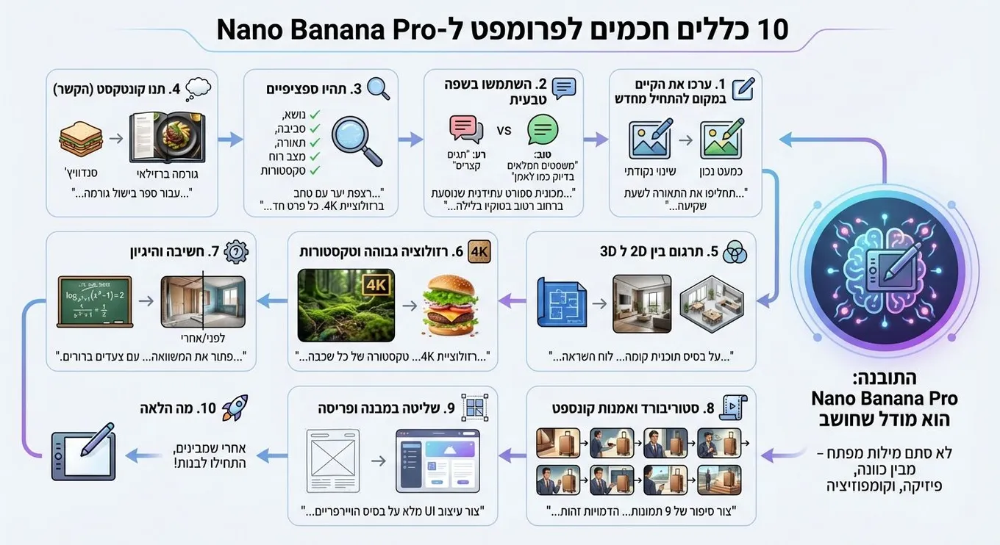

10 rules for prompting Nano Banana Pro
Originally posted on LinkedIn, December 1, 2025.
Nano Banana Pro is a model that thinks. It does not respond only to keywords. It understands intent, physics, and composition.
To get the most from it, do not use short lists of tags such as “dog park realistic 4k.” Treat it like a professional artist and give it a proper brief. These 10 rules come from Google’s official post.
- Edit an existing image instead of starting over
The model is especially good at precise edits. If an image is almost right, there is no need to generate a new one. Ask for the specific change you need.
For example: “Great, but change the lighting to sunset and make the text neon blue.”
- Use natural language
Write complete sentences, as if you were briefing a human artist.
Bad: “car neon night 8k”
Good: “Create a wide cinematic shot of a futuristic sports car driving down a wet street in Tokyo at night. The neon lights should reflect on the asphalt and the metallic body.”
- Be specific
A general prompt produces a general result. Define the subject, environment, lighting, mood, and textures.
- Include context as part of the content
Because the model “thinks,” context helps it make the right choices.
For example: “Create an image of a sandwich for a Brazilian gourmet cookbook.”
The model will understand that the image needs perfect lighting and professional plating.
- Translate between 2D and 3D
The model can turn a 2D drawing into a 3D view, or do the reverse. This is useful for architects, designers, and content creators.
For example: “Based on the attached floor plan, create one mood board with a wide image of the living room and three smaller images showing the bedroom, the office, and a 3D top-down view. Minimalist style, natural lighting.”
Another example: “Turn the This is Fine meme into a realistic 3D render with exactly the same composition.”
- Ask for high resolution and specific textures
The model can generate images at up to 4K resolution. Ask for high resolution and define the materials and textures.
For example: “Create a 4K scene of a moss-covered forest floor. Every detail should be sharp, with soft light filtering through the branches.”
Another example: “Create an exploded infographic of a gourmet hamburger, showing the texture of every layer and describing its flavor.”
- Use reasoning
The model performs internal reasoning steps before producing the final image. This lets it solve visual or mathematical problems.
For example: “Solve the equation log_{x²+1}(x⁴-1)=2 on a board, with clear steps.”
Another example: “Analyze the image of the room and create a before image showing the structural frame and unfinished walls.”
- Create storyboards and concept art
You can generate a series of images that tell a continuous story without having to build grids yourself.
For example: “Create a 9-image story for a luxury luggage brand advertisement. Keep the characters identical across all images, but show them from different angles. End elegantly with the logo.”
- Control structure and layout
An image can serve as a strict template that the model must follow. This is useful when working from a sketch or Wireframes.
For example: “Create an ad based on the attached sketch, following the exact positions of the text and objects.”
Another example: “Create a complete UI design based on the attached Wireframe.”
Another example: “Create a unicorn Sprite that fits exactly into a 64x64 grid.”
- See what else it can do
You can find more examples in Google’s original post.
I have also started using Nano Banana Pro regularly to create infographics for my writing. I add the instruction: “Arrange the images from right to left, as Hebrew is read.” This produces the infographic sequence in the correct direction for Hebrew readers.
